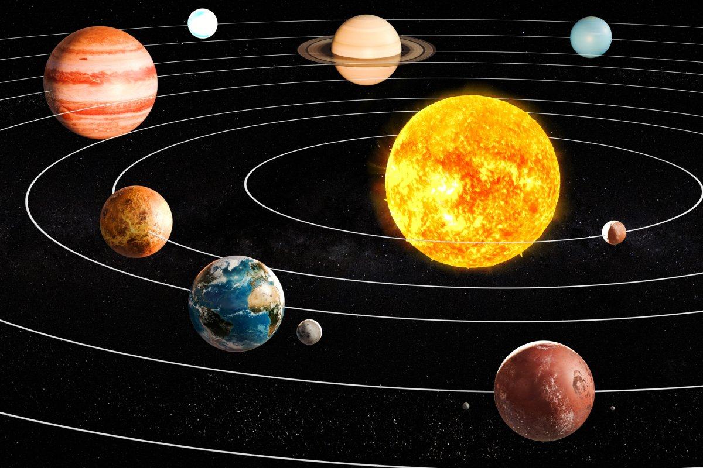

<!DOCTYPE html>
<html lang="en">
<head>
    <meta charset="UTF-8">
    <meta name="viewport" content="width=device-width, initial-scale=1.0">
    <link rel="stylesheet" href="style.css">
    <title>Sistema Solar</title>
</head>
<head>
    <body background="imagens/ceu-noturno-escuro-estrelado-com-estrelas-brilhantes_250841-315.avif">
    <map name="Sistema">

        <area shape="circle" coords="804,321,120" href="https://www.significados.com.br/sol/" alt="Sol" title="O Sol é uma estrela e é a única do nosso sistema solar. " target="_blank">
        <area shape="circle" coords="238,104,101" href="https://www.significados.com.br/jupiter/" alt="jupiter" title="Júpiter é o quinto planeta do Sistema Solar a partir do Sol." target="_blank">
        <area shape="circle" coords="230,382,180" href="https://www.todamateria.com.br/planeta-venus/" alt="Venus" title="Vênus é o segundo planeta do sistema Solar mais próximo do Sol. Tem cerca de 800 milhões de anos e além do Sol e da Lua é o corpo celeste mais brilhante no céu, motivo pelo qual é conhecido desde a antiguidade." target="_blank">
        <area shape="circle" coords="403,524,123" href="https://www.significados.com.br/planeta-terra/" alt="Terra" title="chamado de planeta azul, devido a maior parte de sua superfície (70%) ser coberta por água, é o terceiro planeta a partir do Sol no Sistema Solar." target="_blank">
        <area shape="circle" coords="348,39,139" href="https://www.significados.com.br/netuno-planeta/" alt="Netuno" title="Netuno é o oitavo e último planeta do Sistema Solar, a partir do Sol. É um planeta gasoso, não tendo superfície sólida. Possui 5 anéis e 14 luas." target="_blank">
        <area shape="circle" coords="623,84,187" href="https://www.todamateria.com.br/planeta-saturno/" alt="Saturno" title="Saturno é o sexto planeta a partir do Sol, e o segundo maior do sistema solar." target="_blank">
        <area shape="circle" coords="932,675,172" href="https://www.infoescola.com/marte/" alt="Marte" title="Marte é o quarto planeta do sistema solar. Mitologicamente, sempre esteve associado ao deus da guerra " target="_blank">

    </map>
</head>
</body>
    <section class="section">
        <h1 style="color:rgb(206, 110, 47);text-align: center;font-size: 50pt;">SISTEMA SOLAR</h1>
    <center>
        
    </center>   
        
        
    </section>
    </body>

    
</body>
</html>
